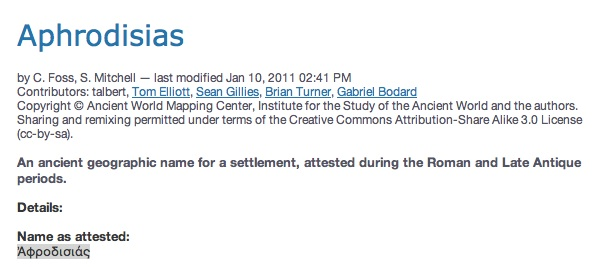
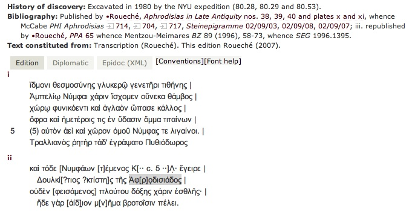
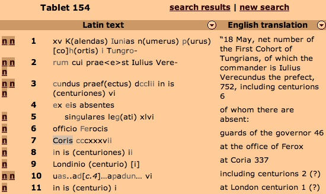
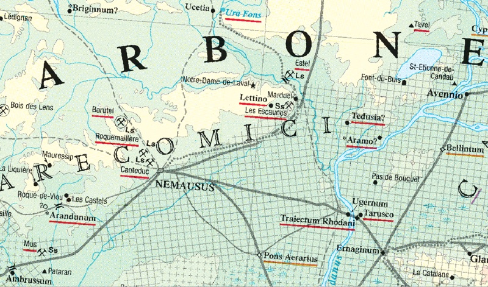

Pleiades: an un-GIS for Ancient Geography
Sean Gillies
Institute for the Study of the Ancient World, New York University
Topics
- Objectives
- Contributors and users
- Resource design
- Lessons learned
- What sort of Gazetteer are we?
This is what I'm going to tell you
Objectives
- Continue the work of the Classical Atlas Project
- Inventory ancient place names and related locations
- Make these resources widely available and editable
- Promote discovery and integration of ancient world resources
This is what I'm going to tell you
Contributors
- Institute for the Study of the Ancient World
- Stoa Consortium
- Ancient World Mapping Center
- Funding: the National Endowment for the Humanities
- Partner: the Digital Atlas of Roman and Medieval Civilization
This is what I'm going to tell you
Contributors
- Senior Editors: Roger Bagnall (NYU) and Richard Talbert (UNC)
- Managing Editors: Tom Elliott (NYU) and Brian Turner (UNC)
- Associate Editor: Michael McCormick (Harvard)
- Chief Engineer: Sean Gillies (NYU)
- 12 individual contributors
This is what I'm going to tell you
Users
- Inscriptions of Roman Cyrenaica (KCL-CCH)
- Epigraphische Datenbank Heidelberg
- Nomisma.org (ANS)
- Portable Antiquities Scheme (UK)
- Google Ancient Places
- Arachne (DAI)
- Perseus Digital Library
- Regnum Francorum Online
This is what I'm going to tell you
Entities
- Names
- Locations
- Context ("Place")
- Vocabularies
This is what I'm going to tell you
Attributes
- Metadata (Dublin Core)
- References
- Publication state
- Per-item revision history
- Attested time periods
- Other
This is what I'm going to tell you
Name Attributes
- Language and writing system
- Attested form
- Transliteration
- Accuracy of transcription
- Completeness of transcription
- Certainty in association with a place
- Evidence in ancient text
This is what I'm going to tell you
Aphrodisias

[any material that should appear in print but not on the slide]
Aphrodisias

Inscriptions of Aphrodisias
[any material that should appear in print but not on the slide]
Coria

Vindolanda Tablets Online
[any material that should appear in print but not on the slide]
Design
- Language and writing system
- Attested form
- Transliteration
- Accuracy of transcription
- Completeness of transcription
- Certainty in association with a place
- Evidence in ancient text
This is what I'm going to tell you
Barrington Atlas

[any material that should appear in print but not on the slide]
Summary
- Pleiades remains relevant
- M institutions, N individuals
- Guided by architecture of the web
- Embrace being a historical gazetteer
- Keep it simple, publish early and often
- Pleiades can still be a richer, better gazetteer
This is what I'm going to tell you
[slide title]
- [point one]
- [point two]
- [point three]
- [point four]
- [point five]
[any material that should appear in print but not on the slide]